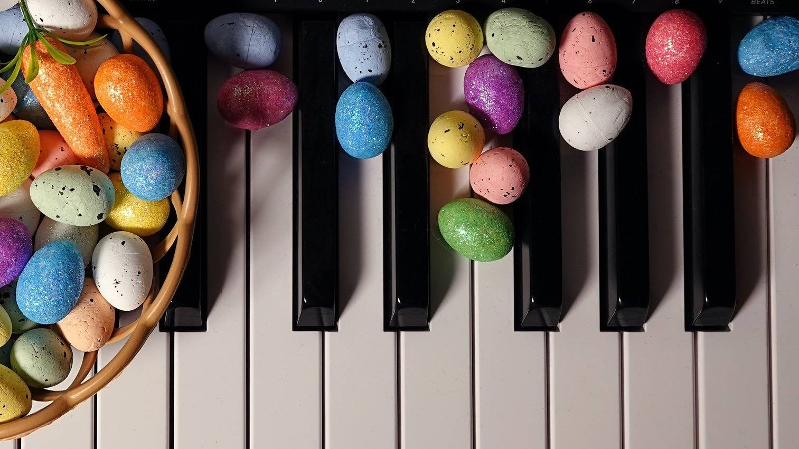

Duarte Teixeira, Iniciação II
- Party cat - Phillip Keveren
- Taxi tangle - Phillip Keveren
- Old MacDonald had a band - arr. Fred Kern
Guilherme Simões, Iniciação III
- Start quest - Phillip Keveren
- Pirates of the sea - Janet Feldman
- Go for the gold - Phillip Keveren
Dylan Palma, Iniciação IV
- Atravessando a ponte - Alice Botelho
- Spring - Phillip Keveren
- Circle dance - Phillip Keveren
Sara Campos, Iniciação IV
- Estudo 53 - Michael Aaron
- Drifting clouds - William Gillock
- Queen's Minuet - William Gillock
Eva Baptista, 2.º Grau
- Sonatina em Dó Maior - Biehl
- A Whole new world - arr. Phillip Keveren
Igor Lopes, 3.º Grau
- Nocturne - Mona Rejino
Gonçalo Soares, 5.º Grau
- Prelúdio IV e VI - António Fragoso
Manuel Soares, 5.º Grau
- Sinfonia n.º 5 - J. S. Bach
Gabriel Ferreira, 5.º Grau
- Invenção a duas vozes em Si b Maior - J. S. Bach
Gabriel Santos, 6.º Grau
- Estudo op. 91 n.º 17 - M. Moszkowski
- Novelette em Dó Maior - Francis Poulenc
A prof. Teresa Raminhos deseja a todos os pais e Encarregados de Educação uma Feliz Páscoa.
